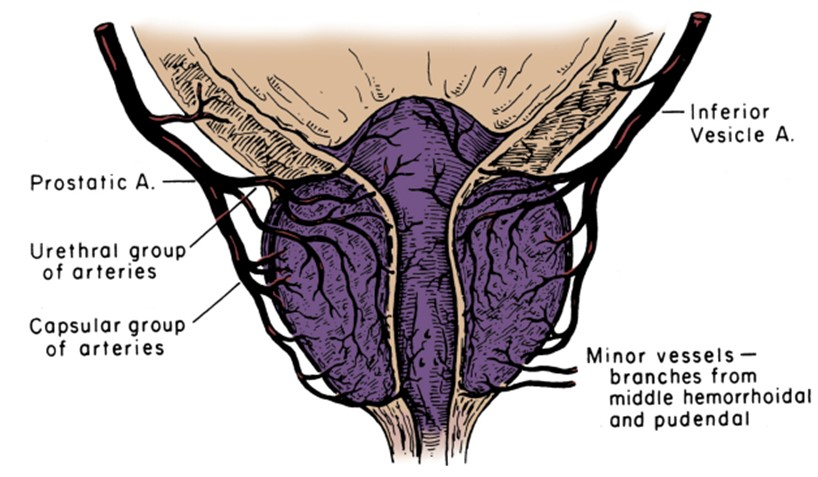

Antibiotika und rektale Massage sind nicht mehr erforderlich!
Schweizer Wissenschaftler haben einen Durchbruch in der Behandlung der chronischen Prostatitis erzielt. Nun kann jeder Mann eine Entzündung der Prostata zuhause in nur 7 Tagen abklingen lassen!
Die Prostata ist das zweite Herz des Mannes. Leider entzündet und vergrößert sich die Prostata infolge von negativen Faktoren in einem Alter ab 40 Jahren. Der Statistik des Europäschen Gesundheitsinstitutes zufolge, ist bakterielle oder nicht-infektbedingte Prostatitis in der einen oder anderen Form bei 9 von 10 Männern vorhanden.
Ungeachtet einer so großen Verbreitung der Pathologie gibt es bis dato keine adäquate und schnelle Behandlung davon. Die vorhandenen Arzneimittel und physiologische Prozeduren wurden seit bereits 50-60 Jahren entwickelt. Leider sind sie nicht nur gesundheitsschädigend (weil die Behandlungsgrundlage starke Antibiotika darstellen), sondern haben auch eine geringe Effizienz. Häufig (in über 93% der Fälle) tritt die Prostatitis nach der Behandlung erneut auf. Deshalb behaupten viele Ärzte, dass die chronische Prostatits unheilbar ist.
Jedoch haben die Schweizer Wissenschaftler eine Methode gefunden, welche die Vorsteherdrüse vollkommen gesund machen kann und es ermöglichen wird, die Prostatitis VOLLKOMMEN zu beseitigen! Bemerkenswert ist, dass diese Methode bereits von unseren Vorfahren verwendet wurden. Die Wissenschaflter haben sie nur perfektioniert. Mit seiner Hilfe kann man die Prostatitis in jedem Stadium heilen, selbst wenn sie bereits zu einem Adenom geführt hat.
Beim Treffen mit den Journalisten hat die Entdeckung der Schweizer Wissenschaftler ein bekannter Urologe, Androloge, Prof. Dr. med. Frank-Michael Köhn, ein Arzt mit einer über 30-jährigen Berufserfahrung, erzählt

Journalist: Prof. Dr. Köhn, erzählen Sie bitte, was macht die Prostatitis gefährlich? Muss man sie unbedingt behandeln?
Prof. Dr. Köhn: Prostatitis muss behandelt werden. Die Prostata, die von dieser Pathologie angegriffen wird, ist ein äußerst wichtiger Organ. Die Gesundheit des Mannes hängt in vielem von dem Zustand der Prostata ab. Die Prostata führt einige lebenswichtige Funktionen aus: sie produziert das prostatische Sekret, kontrolliert den Abfluss des Urins, beugt das Eindringen des Infekts aus dem Ureter in die oberen Harnwege vor, produziert das Prostaglandin E, regelt den psychoemotionalen Zustand des Mannes. Und darum sind die Probleme mit diesem Organ durch eine Entwicklung von einer Vielzahl von Pathologien gefährlich: Impotenz, Nierenentzündung und Blasenentzündung, Schwächung der Abwehrkraft, Senkung der Testosteronproduktion, und infolge dessen schnelles Ausöden des Organismus, Herz-Kreislauferkrankungen und Depressionen.
Bei fehlender Behandlung verlaufen sogar bei chronischer Prostatitis, das heißt, wenn keine akuten Symptome auftreten, pathologische Veränderungen in der Prostata, die immer zu einem Adenom, und anschließend zu Prostatakrebs führen. Wann das passieren wird, ist nur eine Frage der Zeit. Bei denen einen findet die pathologische Wiedergeburt des Prostatagewebes schnell statt, bei den anderen - langsam.
Darüber hinaus hat die Prostatitis eine Eigenschaft, akut zu werden. Mit jeder Exazerbation werden die Symptome nur schwieriger werden. Welche Symptome sind das: Entzündung der Prostata, erschwertes Wasserlassen, Schmerzen in den Hoden und in dem Kreuz, Brennen und Schmerzen beim Wasserlassen, häufiger Harndrang.
Die Prostatitis ist überhaupt keine harmlose Erkrankung. Wenn man auf die Behandlung verzichtet, verkürzt der Mann sich wortwörtlich das Leben. Die Krankheit muss so früh, wie möglich behandelt werden.
Journalist: Warum bringen die traditionellen Behandlungsmethoden nur einen geringfügigen therapeutischen Effekt mit sich?
Prof. Dr. Köhn: Die Prostatitis ist eine äußerst heimtückische Erkrankung und äußerst standhaft. So dachten die Mediziner bis zuletzt noch. Es ist damit verbunden, dass die heute vorhandenen Arzneimittel nicht in der Lage waren, die Prostata wieder gesund zu machen. Die noch vor vielen Jahrzehnten entwickelten Arzneimittel waren zu 90% nur auf die Beseitigung der Symptome der Krankheit ausgerichtet, nicht aber auf die Beseitigung der Ursachen.
Das heißt, sie waren auf die Abschwächung der Entzündung der Prostata ausgerichtet, um das Wasserlassen zu erleichtern und die Schmerzen zu stillen, auch sind sie auf den Kampf mit dem pathogenen Mikroflora ausgerichtet, die sich im Prostatasekret bildet. Ja, vorübergehend hilft das. Jedoch ist es sehr schwierig, alle Keime zu töten, bis zum letzten. Einige von den Keimen überleben immer. Und deshalb kehrt die Prostatitis in 93% der Fälle bereits am nächsten Jahr nach der Behandlung wieder auf.
Um das gesamte pathogene Mikroflora abzutöten, sind starke Antibiotika erforderlich, damit sie aber funktionieren können, muss man das pathogene Agent aus der Prostata herausdrücken. Genau deshalb wird die von vielen Männern so ungeliebte rektale Massage angeordnet.
Genau aufgrund der Komplexität der Behandlung nehmen viele Unannehmlichkeiten hin, die von der Pathologie in ihr Leben eingebracht werden. Das ist aber nicht richtig, und, wie ich schon sagte, gefährlich. Die neue Methode erlaubt es, die Prostatitis ohne Rektalmassage und Antibiotika zu behandeln, und das ist ein riesiger Vorteil dieser Methode. Man kann die Methode selbstständig zuhause anwenden.
Journalist: Erzählen Sie mehr dazu, worin besteht die Entdeckung der Schweizer Wissenschaflter?
Prof. Dr. Köhn: Sie haben eine Methode entdeckt, die es erlaubt, nicht nur die Symptome der Prostatitis zu beseitigen, sondern auch, was viel wichtiger ist, ihre Ursachen. Ich versuche, es mal einfach zu erklären. Schaut mal, warum entsteht die Prostatitis? Warum sind die Fälle ihrer Entstehung in der Jugendzeit vereinzelt, und bei Menschen in einem Alter über 40 Jahren gibt es die Prostatitis in der einen oder anderen Form bei jedem?
In Wirklichkeit ist das seit langem bekannt. Die Ursache der Äußerung der Verhaltserscheinungen und der Entwicklung der Bakterien ist die Verschlechterung der Blutversorgung der Prostata. Das liegt daran, dass dieses Organ wortwörtlich von einem Netzwerk von kleinen Kapillaren umgeben ist. Mit dem Alter verstopfen diese Kapillaren mit Cholesterin, das Kapillarennetzwerk wird ärmer. Infolge davon verschlechtern sich die Durchblutung und die Nährstoffversorgung der Prostata. Und dieses Organ ist sehr empfindlich dazu, da es viele verschiedene Funktionen ausübt und eine große Anzahl der nützlichen Stoffe erfordert. Im Endeffekt, infolge der mangelhaften Durchblutung, beginnt die Prostata, falsch zu arbeiten, was zu Verhaltserscheinungen führt. Außerdem wird die Abwehrkraft der Drüse geringer, und sie hört auf, pathogene Keime zu bewältigen, die sich darauf hin lavinenförmig vermehren.
Entwickeltes System der Blutversorgung der Prostata
Worin besteht der Verdienst der Schweizer Wissenschaftler? Sie haben eine Methode der Gesundung des Kapillarennetzerks der Prostata und der Wiederherstellung der normalen Blutversorgung der Drüse gefunden. Die Wissenschaflter haben festgestellt, dass die Cholesterinablagerungen in diesem Teil der Gefäße gut von Omega-polyungesättigten Fettsäuren zerstört werden (Omega-3, Omega-6 und Omega-9), wenn sie in einem Verhältnis von 1:3:10 zueinander stehen. Außerdem haben die Wissenschaftler eine Pflanze gefunden, in der diese Fettsäuren in einem richtigen Verhältnis stehen. Das war eine solche Pflanze, wie Cannabis, genauer gesagt, nicht die Pflanze selbst, sondern seine Samen. Im Grunde sind Cannabissamen das einzige natürliche Produkt, in dem die polyungesättigten Fettsäuren Omega sich in einem richtigen Verhältnis befinden.
Die Wissenschaftler haben ein hochgradig konzentriertes Öl aus Cannabissamen erhalten und klinische Studien in dem Genfer Institut der Urologie durchgeführt. Insgesamt haben ungefähr 500 Freiwillige, die an chronischer Prostatitis leiden, an der Studie teilgenommen. Ich möchte Ihnen die Ergebnisse der Studie vorstellen, sie sind einfach überwältigend!
Ergebnisse der Studien:
- Vollständige Heilung der Prostatitis: 96 % der Probanden
- Die Entzündung ist abgeklungen, das Wasserlassen hat sich normalisiert: 100 % der Probanden
- Steigerung des Testosteronspiegels: 87 % der Probanden
- Eine gesunde Potenz hat sich wiederhergestellt: 91 % der Probanden
- Schmerzen in der Leiste und beim Wasserlassen sind abgeklungen: 99 % der Probanden
- Fehlen von Gewöhnung und Nebenwirkungen: 100 % der Probanden
Wie Sie sehen können, ist der Anteil derjenigen, die Prostatitis loswerden konnten, sehr hoch. Wenn man mit traditioneller Behandlung vergleicht, dann wird die Heilung mithilfe vom CBD-Öl um das 17-fache wirksamer sein. Dabei ist das Öl selbst völlig natürlich, und deshalb schadet es dem Körper nicht nur, sondern fördert im Gegenteil seine Gesundheit. Reinigt Gefäße im gesamten Körper. Das ist ein echter Durchbruch auf dem Gebiet der Behandlung der Prostatitis und der Wiederherstellung der Potenz.
Journalist: Wird denn das hochgradig konzentrierte CBD-Öl in Kapsel in europäischen Apotheken verkauft werden? Wann wird es dort verfügbar sein und zu welchem Preis?
Prof. Dr. Köhn: Gemäß der Erklärung des Herstellers, werden die Lieferungen des in die europäischen Apothekennetze, darunter auch in die deutschen, frühestens 2022 beginnen. Das ist damit verbunden, dass Canabisöl ein recht knappes Gut ist. Heute gibt es praktisch keine Felder mit Cannabis, aus dem das Öl hergestellt wird, in Europa.

KAPSELN
Jetzt (und ich denke mal, das wird noch einige Jahre so bleiben) kann man das nur auf der offiziellen Webseite des Herstellers bestellen .
Was den Preis angeht... Momentan ist der Preis minimal, da das hochgradig konzentrierte direkt vom Hersteller verkauft wird, indem es die Zwischenhändler handelt. Darum ist diese Methode der Behandlung der Methode allen verfügbar. Das Öl selbst kann sogar ohne die Verordnung eines Arztes eingenommen werden.
Das einzige, was bedacht werden sollte, ist, dass das in Kapselform in eingeschränkter Menge verkauft wird, und die Anzahl der Bestellungen steigt täglich exponentiell an, da immer mehr Männer von seinen bemerkenswerten Eigenschaften erfahren. Deshalb würde ich allen empfehlen, eine Anfrage zu senden, um das Öl so früh, wie möglich zu bekommen, solange es noch vorrätig ist.
Hinweis:
- Kapseln beseitigen Entzündungen der Prostata.
- Verstärkt den Sexualtrieb gleich nach der Einnahme.
- Normalisiert das Wasserlassen.
- Stellt die natürliche Potenz wieder her.
- Steigert den vitalen Tonus.
ERGEBNISSE BEI DEN LESERN

"Ein erstaunliches Arzneimittel. Ich habe an Prostatitis mehr, als 10 Jahre lang gelitten. Ich konnte nicht normal schlafen, stets hatte ich Harndrang. Von Sex war überhaupt keine Rede, die Schmerzen waren so stark, dass ich es einfach nicht aushalten konnte. Gelitten habe sowohl ich, als meine Frau.
Ich habe verschiedene Medikamente gegen Prostatitis ausprobiert, und als Ergebnis die Kapseln haben alle meine Erwartungen übertroffen. Ich hatte nicht nur keine Schmerzen mehr, sondern auch keine Probleme mit dem Wasserlassen mehr, und ich bekam auch ein Interesse zum anderen Geschlecht, das mit dem Alter abgeklungen hat. Dieses Mittel hat meine Gesundheit und mein Privatleben gerettet! Ich empfehle es allen!"
Bernd Müller
63 Jahre

"Auf den Rat meines Hausarztes hin habe ich beschlossen, auszuprobieren, indem ich auf nichts mehr hoffte, da ich schon verzweifelt war, ein wirksames Mittel gegen die Prostatitis zu finden.
Jedoch war zu meiner Verwunderung und riesiger Freude, bereits nach einer Woche nach dem Beginn der Einnahme, bekam ich erhebliche Verbesserung des Zustandes: Ich hatte keine Schmerzen und keine Entzündung mehr. Zum Ende der Kur kam die Potenz zurück, und die brennenden Schmerzen und das Unwohlsein habe ich schon vergessen. Einfach ein Zaubermittel ist das."
Jonathan Schubert
69 Minuten
Matthias K.
Danke. Hat neugierig gemacht. Ich habe die Kapseln bestellt. Die Prostatitis rückt mir schon seit langem auf den Pelz.
Frank V.
Habe es auch bestellt. Habe an einem anderen Ort auch schon gehört, dass gut bei Prostatitis und Impotenz hilft. Ich wusste nicht, wo man es kaufen kann. Danke für den Link!
Albrecht B.
Und ich bin einer von denen, die es bereits geschafft haben, dieses Öl auszuprobieren. Es hat mir gut geholfen. Habe aufgehört, häufig das WC zu besuchen. Die Schmerzen haben abgeklungen. Die Potenz wurde stabiler. Mir hat alles gefallen. Und das alles ohne Antibiotika und Massage!
Michael T.
Ich stimme zu! Ein ausgezeichnetes Mittel. Die Prostatitis habe ich 2 Jahre lang versucht, zu behandeln, aber erfolglos. Nachdem ich mit der Einnahme der Kapseln begonnen habe, war die Prostatitis in anderthalb Wochen weg. Ich empfehle es allen!
Mattias S.
Habe es auch bestellt. Ich sollte es ausprobieren. Ich habe es schon satt, die Prostatitis zu behandeln.
Dominik M.
Die chronische Prostatitis habe ich ab dem Alter von 38 Jahren. Jetzt bin ich 41 Jahren. In dieser Zeit habe ich sie zweimal behandelt, als ich starke Exazerbationen habe. Letztes Mal haben die Ärzte mich gerade so retten können. Haben gesagt, noch etwas später wäre die Prostatitis zu Prostatakrebs geworden. Deshalb empfehle ich allen, die Prostatitis haben, sie so früh, wie möglich loszuwerden. Das ist ein sehr gefährliches Unheil
Uwe C.
Ich habe über die Kapseln auf der genannten Seite gelesen. Beeindruckend! Ich habe eine Anfrage gesendet.
Hans G.
Habs bestellt. 68 bin ich. Prostatitis habe ich seit 3 Jahren. Es gibt ein Risiko der Entstehung des Adenoms der Prostata. Im letzten Monat bin ich zu elektronischer rektalen Prostatamassage gegangen - ein total widerliches Ding, habe gerade so geschafft, eine Kur von 2 Wochen auszuhalten, und am Ende war das alles sinnlos.
Kurt F.
Ich muss diese Kapseln für meinen Mann bestellen. Die Prostatitis hat er schon seit denke ich mal 5 Jahren. Die Potenz hat er jetzt überhaupt keine. Er ist erst 61 Jahre alt
Günther K.
Danke!
Albert C.
Ein Prima Mittel!!! Die Prostatitis vergeht!! Ich empfehle es allen, solange es vorrätig ist. Ich fühle mich prächtig, alle Symptome sind in einigen Tagen komplett verschwunden. So gut hat mir noch nichts geholfen.
Gottlieb M.
Das ist das beste Mittel von allen! Ich habe diese ungefähr vor 3 Monaten eingenommen. Jetzt habe ich überhaupt keine Prostatitis mehr! Davor hatte ich sie einige Jahre lang Prostatitis, deshalb einen schlechten Ständer und bin schnell gekommen. Nun ist alles normal geworden!
Peter R.
Ich habe geschafft, es zu bestellen
Fritz D.
Ich nehme es seit drei Tagen. Langsam wird es besser. Danke!
Kapseln zur Steigerung der Potenz können auf der offiziellen Website bestellt werden
© 2023 Copyright. All Rights reserved.